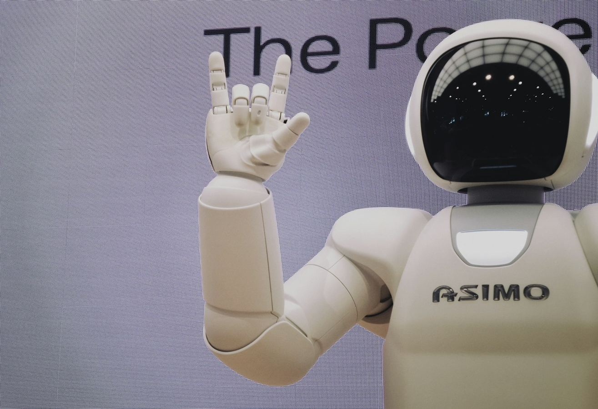
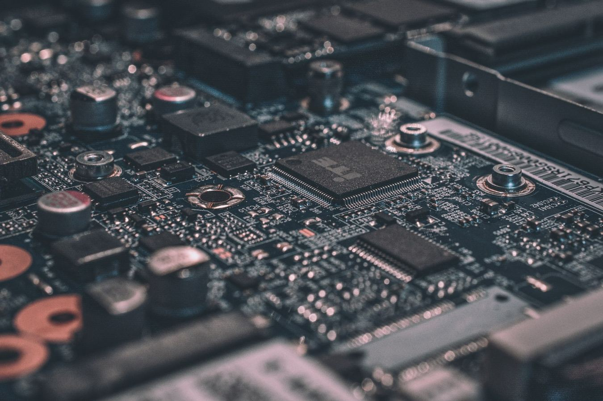

eos-platform 1.0 lands: one toolchain, every EoS profile
After eighteen months of incremental releases, the eos-platform meta-distribution reaches 1.0 with stable APIs, a unified package manifest, and reproducible builds across all 14 EoS components.
AI · ML · NEURAL · RTOS
Foundation research →
EAI 0.9 ships INT4 LLM runtime — 11 tok/s on a Cortex-M85
EAI's new quantized inference path squeezes a 1.3B-parameter model into 312 MB of flash and runs at interactive speed on a 480 MHz microcontroller. We dig into the kernel scheduler that made it possible.
ENI's 1,024-channel pipeline: deterministic spike sorting in 800 µs
How the Embedded Neural Interface stack moves a thousand-electrode array through filtering, sorting, and decoding inside a single RTOS frame — and why the hardest part wasn't the math.
RTOS & Kernel
More in RTOS & Kernel →Embedded AI
More in Embedded AI →Neural Interface
More in Neural Interface →Security & Boot
More in Security & Boot →eBootloader secure boot: a measured-launch walkthrough
An end-to-end tour of eBoot's chain of trust — root-of-trust keys, immutable stage 0, signed manifests, anti-rollback counters, and the runtime attestation hooks EAI consumes during model load.
eDB ships AES-XTS at-rest encryption — even on 64 KB devices
eDB's new storage layer adds page-level AES-XTS encryption with hardware-key offload on supported MCUs. The catch: it had to fit in 6 KB of code on the smallest target. Here's how.
Tools & Sim
More in Tools & Sim →
Apps & Platforms
More in Apps & Platforms →Community
More in Community →The ecosystem — 14 components
Explore all →UPCOMING Events & partner sessions
All events →EoS Foundation @ Embedded World NA 2026
Aug 12Webinar: 1.3B-parameter LLM at 11 tok/s on a microcontroller
Sep 30Toradex × EoS Joint Workshop: Boot to Inference
Co-host with the EoS Foundation: we partner with conference organizers, hardware vendors, publishers and academic societies to bring embedded AI/ML/Neural research to global audiences. Propose a session →
Industry & community
More partners →The EoS Foundation collaborates with the broader embedded ecosystem — events, publications, and partner organizations advancing the field. Become a partner →
Support the foundation
The EoS Research Foundation is a 501(c)(3) nonprofit. Open ecosystem, public research, member-governed.